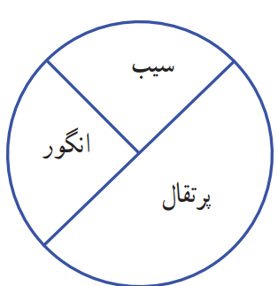
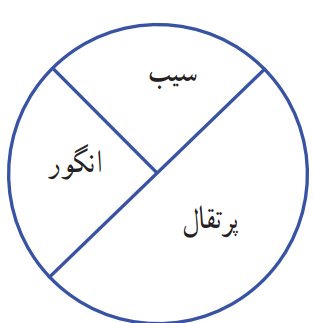
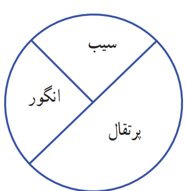

2- مدّت زمانی که طول میکشد تا دانشآموزان مدرسهی دانش از خانه به
مدرسه بروند،در نمودار زیر مشخّص شده است.
اکثر این دانشآموزان، بیشتر از 10 دقیقه در راهاند.
به نظر شما، چه تعدادی از این دانشآموزان بهتر است با سرویس به خانه بروند؟
چرا؟

3- نمودار دایرهای روبهرو نشان میدهد که مریم یک شبانهروز خود را چگونه گذرانده است.
یک نمودار ستونی رسم کنید و این اطّلاعات را در آن قرار دهید .
چگونه اطّلاعات نمودار را به عدد تبدیل میکنید؟ توضیح دهید.
4-
لادن از دوستانش دربارهی آبمیوهی مورد علاقهشان پرسید و با توجّه به پاسخهای آنها نمودار ستونی زیر را رسم کرد.


کدامیک از این نمودارهای دایرهای بهطور تقریبی همان اطّلاعات را نشان میدهد؟ چرا؟


 

اکثر این دانشآموزان، بیشتر از 10 دقیقه در راهاند.
به نظر شما، چه تعدادی از این دانشآموزان بهتر است با سرویس به خانه بروند؟
3- نمودار دایرهای روبهرو نشان میدهد که مریم یک شبانهروز خود را چگونه گذرانده است.
یک نمودار ستونی رسم کنید و این اطّلاعات را در آن قرار دهید .
چگونه اطّلاعات نمودار را به عدد تبدیل میکنید؟ توضیح دهید.
کدامیک از این نمودارهای دایرهای بهطور تقریبی همان اطّلاعات را نشان میدهد؟ چرا؟
